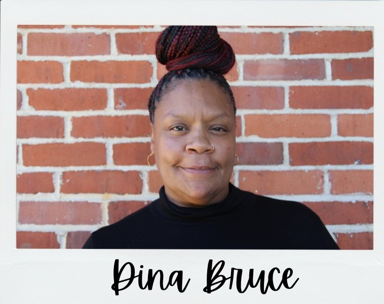

Staff Spotlight:
Deputy Director

Deputy Director Dina Bruce oversees all OpenDoors shelters, including the Pawtucket,Woonsocket, and Providence shelters, and the She Thrives program, including Foundations and the Women and Children’s House. In total, Dina is responsible for managing the housing of over 225 people every night. Prior to starting at OpenDoors in 2021, Dina helped manage the Providence Center's Men's Road to Recovery Residential Treatment Program for seven years. She is on the state’s Advisory Council on Housing and Homelessness, is a Certified Peer Recovery Specialist, and is a winner of the 2023 Rhode Island Coalition to End Homelessness Courage Award and the 2024 Juneteenth Human Rights Award.
What Inspires You to Come to Work?
As a person with lived experience, I come to work every morning hoping to make a difference in someone’s life. People who are incarcerated often struggle to stay out of prison and re-enter society. I believe that everyone deserves a chance at a better life.
Any Words of Wisdom?
Whenever I meet a new person who has been released from incarceration, I always want them to know that they should give themselves a chance, and that they deserve a good life. It’s hard to start over, but if you lean on your support systems, you can make it happen.